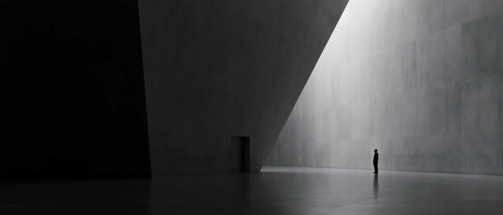

The camera moves in on one station of the same loop. The arc, the benchmark line, and the flow are the homepage's, seen close enough to watch a single discipline work.
Same orbit, different subject. The camera follows the positions themselves, each name traveling the loop, each accountable to the benchmark at the center.
Edge on, the loop becomes a line, and what it leaves behind becomes visible: versions of the memo stacking into a record, scored where the horizon closes.
La Lettura register: concentric hairline rings, one mark per decision, a ticked outer rim. The loop as a piece of newsprint data journalism.
A technical drawing: thin ink, angular ticks, dimension lines, a title block. The system rendered the way an engineer would file it.
No perspective, no particles. A perfect circle, four points, one traveling accent. The quietest and boldest of the set.
The loop drawn in light ink over our documentary imagery. This is also the CEO's banner idea: an element of the decision, laid on the real world.
The S&P core as a soft luminous body, the loop as a polygonal net holding it. Readings docked left with the underline grammar. One restrained warm tone, colour in parts only.
Every thin line radiating from the core is one underwritten decision, grouped by classification, capped by an arc. The record shown as sheer count. Scored lines carry the only colour.
The Split Seconds poster, faithfully: a dark tall field, one dotted ray per position, ringed marks for every memo version, a dense instrument hub at the center. Ten years of underwriting as a poster.
One translucent plate per memo version, the current one darkest in front, every earlier one still visible through it. The orbital traces inside are the same loop, run again each version. The Memo copy, drawn.
Thousands of strands pour down: every idea, every headline, every urge to trade. They are forced through one narrow, bright waist, the memo, and what comes out below is the record. A funnel drawn as fibre.
A ridgeline per quarter: the same thesis, re-underwritten again and again, stacking downward into a record. The red line is stated conviction; the blue line is what actually happened.
The book as a spine of names, every decision a ray. Length is weight. Grey rays are open and held; green met their thesis at the horizon; red broke, and are kept anyway.
The second overlay study: the predicted-vs-actual figure drawn in light ink over our documentary imagery. The diagram lives on the real world, per the banner direction.
A paper layer sits over the documentary image, and the figure is cut out of it: one bar per year of memos, mirrored below the line. The world shows through the record, not behind it.
A fine grid over the documentary frame, and numbered spec callouts pinned to it: the memo, the benchmark, the loop. The system presented the way performance gear is.
The quietest overlay: one photograph under a film grain, and one small diagram floating on it. Four dots, three arcs, a log scale: the first memo, the tenth, the hundredth, the thousandth.
